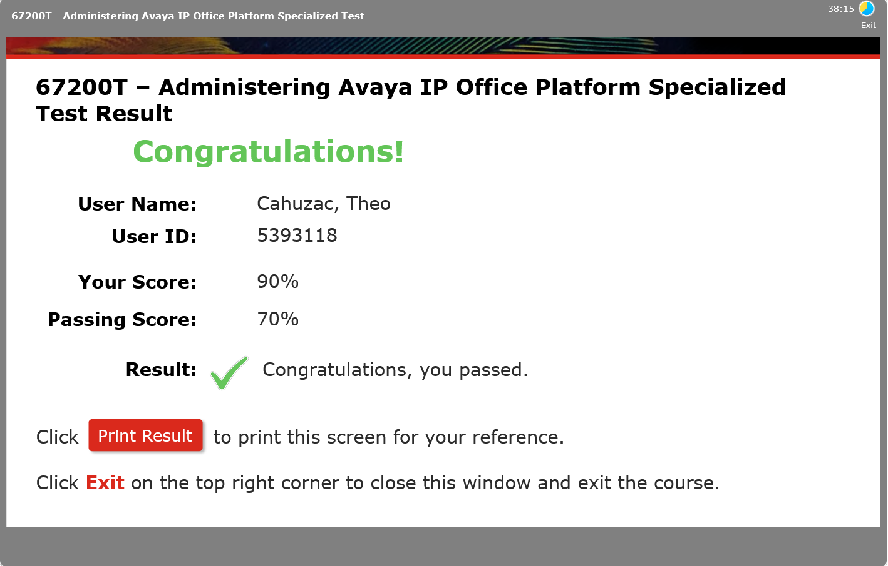

Pendant mon stage, j'ai eu l'occasion de découvrir le système de téléphonie IP Avaya, largement utilisé en entreprise. Cette formation courte visait à me familiariser avec les outils et protocoles utilisés dans un environnement professionnel réel.
J'ai découvert le fonctionnement des téléphones IP Avaya, les protocoles associés comme le SIP, ainsi que l'interface de gestion du système. J'ai appris à configurer des postes téléphoniques et à comprendre comment la VoIP s'intègre dans une infrastructure réseau d'entreprise.
Même si cette formation était courte (3 heures), elle m'a permis de faire le lien entre les notions théoriques apprises en cours (protocoles de couche application, adressage IP) et leur application concrète dans un contexte professionnel. La VoIP est un domaine dont je n'avais pas eu l'occasion d'approfondir avant cette formation et celle-ci me donne envie d'en apprendre d'avantage

⬅ Retour